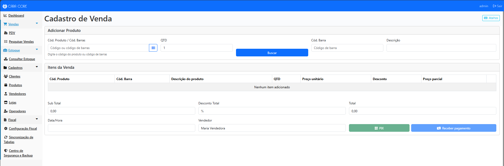
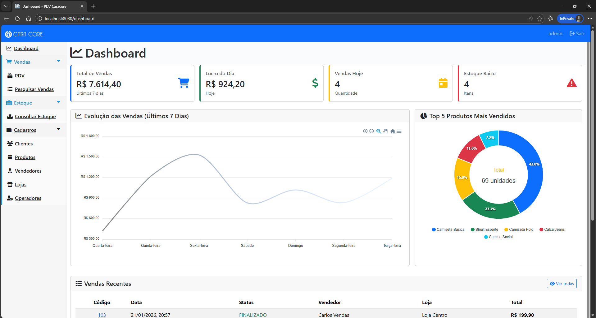
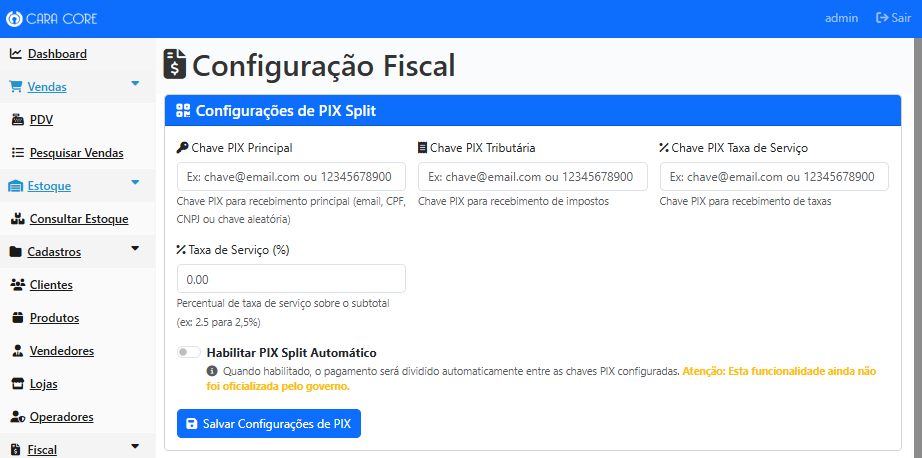

Visão Geral
O CaraCore-PDV é a solução da Cara Core Informática para gestão completa de pontos de venda, com foco em retorno sobre investimento, sustentabilidade e conformidade fiscal. Desenvolvido para o varejo brasileiro, integra em uma única plataforma: Operação Ininterrupta, Tecnologia Selo Verde e Blindagem Fiscal 2026.
O sistema atende às dores reais do lojista: internet instável, custo com papel e impressoras, e insegurança com a Reforma Tributária. Com o Selo CaraCore de Sustentabilidade, você opera com segurança local, elimina gastos com bobinas e fica em dia com as novas leis — sem pagar impostos a mais nem multas.
Principais Funcionalidades
| Módulo | Descrição |
|---|---|
| PDV (Ponto de Venda) | Interface otimizada para operação de caixa com suporte a múltiplas formas de pagamento |
| Gestão de Vendas | Controle completo do ciclo de vendas com rastreamento de status e histórico |
| Cadastro de Produtos | Gerenciamento de catálogo com código de barras, unidades de medida e controle de estoque |
| Gestão de Clientes | Cadastro e consulta de clientes com histórico de compras |
| Controle de Estoque | Monitoramento em tempo real de disponibilidade por loja |
| Dashboard Administrativo | Painel executivo com métricas de vendas, produtos mais vendidos e indicadores de desempenho |
| Relatórios Gerenciais | Geração de relatórios em PDF para análise de vendas, estoque e performance por loja/vendedor |
| Gestão de Operadores | Controle de acesso com perfis de usuário (Administrador, Operador, Visitante) |
| Multi-Loja | Suporte a múltiplas unidades comerciais com estoque independente |
| Configuração Fiscal | Gestão completa da Reforma Tributária 2026 com cálculo automático de CBS e IBS |
| PIX Split Configurável | Toggle para habilitar/desabilitar divisão automática de pagamentos (quando oficializado) |
| Histórico de Alíquotas | Rastreamento completo de alterações nas alíquotas tributárias com auditoria |
| Leitor de Código de Barras | Leitura de código de barras via câmera com QuaggaJS e busca inteligente unificada |
| Busca Inteligente de Produtos | Campo unificado que identifica automaticamente códigos numéricos e códigos de barras |
| Interface Moderna | Textos de ajuda contextuais, placeholders informativos e navegação intuitiva |
| Landing Page Pública | Página inicial pública com informações sobre o sistema antes do login |
| Operação Ininterrupta (Tecnologia de Fluxo Contínuo) | Blindagem de Dados Local: o caixa nunca para, mesmo sem internet. Vendas registradas e protegidas localmente; backup automático ao encerrar e rotinas de cópia de segurança. Zero perda de vendas por falhas de rede. |
| Enlace de Contingência | Quando a internet cai por completo, o sistema continua vendendo e comunica dados vitais por canal alternativo. Inclui validação de licença e recuperação de senha para o operador (Premium). O PDV nunca para de operar. |
| Planos Free e Premium | Free: limites compatíveis com começo de operação; ideal para digitalizar com segurança local. Premium: validação periódica; automações (relatório ao contador, recibos ilimitados); suporte prioritário com atendimento remoto. |
| Configuração de E-mail e Contador | Painel para servidor de e-mail (recuperação de senha, notificações). Seção Contador responsável (nome e e-mail) para envio automático do relatório ao contador (Premium). |
| Relatório ao contador (Premium) | PDF e TXT automáticos com vendas finalizadas e totais por forma de pagamento; envio diário ao e-mail configurado. Requer plano Premium e automações ativas. |
| Recuperação de senha | E-mail, WhatsApp e Telegram. No Premium, inclusão de canal alternativo ao celular do operador quando configurado. |
| Infraestruturas externas (PIX e SEFAZ) | Integração com gateways de pagamento (PIX) e Web Services da SEFAZ (emissão NFC-e e contingência). O PDV não controla a disponibilidade desses serviços; a documentação técnica (o que plugar, timeout, fila de contingência e testes) está no repositório (PLUGINS_PIX_SEFAZ.md). |
| Opção simplificada (um único PDV) | Perfil pensado para um único ponto de venda: armazenamento local em arquivo único, sem servidor de banco; carga inicial automática. Ideal para pequenos e médios que valorizam simplicidade e Blindagem de Dados Local. |
Diferenciais e Capacidades
Operação Ininterrupta e Blindagem de Dados Local
Com a Tecnologia de Fluxo Contínuo, o caixa nunca para: vendas são salvas e protegidas localmente, com backup automático ao encerrar e rotinas de cópia de segurança. O sistema prospera mesmo quando a internet oscila ou cai — nenhuma venda se perde.
- Operação contínua mesmo sem internet
- Zero perda de vendas por falhas de rede
- Centro de Segurança e Backup no painel para políticas de retenção
- Múltiplos terminais operando de forma independente quando aplicável
Enlace de Contingência
Quando a internet cai por completo, o PDV nunca para de vender. O enlace de contingência mantém a comunicação de dados vitais e a validação de licença por canal alternativo; na licença Premium, a recuperação de senha do operador também pode usar esse canal. Banner e indicador na tela informam quando o modo está ativo.
A configuração e o dispositivo dedicado são feitos pela equipe Cara Core ou por parceiros. Consulte Consultoria.

Figura 2: Interface de Frente de Caixa otimizada para agilidade
Dashboard Administrativo em Tempo Real
O Dashboard Administrativo integrado oferece visualização imediata de indicadores críticos:
- Evolução de Vendas: Gráfico de linha mostrando faturamento dos últimos 7 dias
- Produtos Mais Vendidos: Análise dos top 5 produtos com distribuição visual
- Indicadores Rápidos: Cards com total de vendas, lucro do dia, quantidade de vendas e alertas de estoque baixo
- Vendas Recentes: Tabela com as últimas transações realizadas
- Atualização Dinâmica: Dados carregados via API REST para visualização em tempo real

Figura 1: Dashboard administrativo com métricas em tempo real
A implementação utiliza ApexCharts para renderização de gráficos responsivos e interativos, garantindo visualização clara em diferentes dispositivos.
Blindagem Fiscal 2026 — Motor de Inteligência CaraCore
O Motor de Inteligência CaraCore aplica a Reforma Tributária 2026 de forma automática, com cálculo de CBS e IBS e alíquotas configuráveis por ano (2026-2033):
- Cálculo de IVA Dual: CBS e IBS aplicados automaticamente com alíquotas por ano
- Motor de Alíquotas: Interface para configuração de alíquotas anuais com histórico de alterações para auditoria
- Resumo Fiscal Detalhado: Tributos exibidos no fechamento da venda e no cupom (PDF) para o cliente
Figura 3: Configuração Fiscal com gestão de alíquotas da Reforma Tributária 2026
PIX Split Configurável
O sistema oferece suporte preparado para PIX Split Automático, com controle de liga/desliga para quando a funcionalidade for oficializada pelo governo:
- Toggle de Ativação: Interface administrativa para habilitar ou desabilitar o PIX Split
- Configuração de Chaves PIX: Cadastro de chaves PIX para recebimento principal, tributário e taxa de serviço
- Cálculo Inteligente: Quando habilitado, calcula automaticamente a divisão do pagamento entre as partes
- Modo Informativo: Quando desabilitado, os tributos são calculados apenas para fins informativos, sem divisão real do pagamento

Figura 4: Resumo fiscal com PIX Split desabilitado - tributos apenas informativos
Importante: O PIX Split está preparado tecnicamente, mas permanece desabilitado por padrão até a oficialização pelo governo. A Reforma Tributária (cálculo de CBS e IBS) está ativa e funcionando normalmente.
Centro de Segurança e Backup
O painel administrativo inclui um Centro de Segurança e Backup para configuração de políticas de segurança, criptografia de dados sensíveis e gestão de rotinas de backup e restore.

Centro de Segurança e Backup no painel administrativo
Configuração de E-mail e Contador
O painel de Configuração de E-mail define servidor, porta e credenciais para envio de e-mails (recuperação de senha, notificações). A seção Contador responsável (nome e e-mail) configura o destinatário do relatório ao contador; o envio diário de PDF e TXT é automático no plano Premium.
Relatório ao contador (Premium)
Geração automática de PDF e TXT com vendas finalizadas e totais por forma de pagamento; envio diário ao e-mail do contador configurado. Requer plano Premium e automações ativas.
Recuperação de senha
Canais disponíveis: e-mail, WhatsApp e Telegram. No Premium, quando configurado, a nova senha também pode ser enviada ao celular do operador por canal alternativo.
Infraestruturas externas (PIX e SEFAZ)
O CaraCore-PDV integra-se a serviços externos: gateways de pagamento (PIX) e Web Services da SEFAZ (emissão NFC-e e contingência). A disponibilidade dessas infraestruturas não é controlada pelo PDV; o sistema detecta timeout e indisponibilidade, aciona contingência quando necessário e mantém fila local para retry. A documentação técnica sobre o que plugar, como configurar e como testar (incluindo testes automatizados da fila de contingência) está no repositório do projeto (PLUGINS_PIX_SEFAZ.md).
Implantação e Suporte
O CaraCore-PDV roda em plataforma enterprise com armazenamento local seguro (Blindagem de Dados Local) e opção simplificada para um único PDV. A implantação técnica — ambiente de execução, rede, backup, enlace de contingência e configuração fiscal — é realizada pela Cara Core Informática ou por parceiros homologados.
Implantação com segurança e agilidade: Conheça nossos serviços de consultoria e implantação assistida →
Modelo de Distribuição e Suporte
O CaraCore-PDV é uma solução proprietária desenvolvida pela Cara Core Informática para gestão completa de pontos de venda. Para garantir a disponibilidade e confiabilidade do sistema em ambientes de produção, a Cara Core Informática oferece serviços profissionais de suporte técnico especializado, incluindo implantação, configuração, treinamento e manutenção contínua.
Suporte Profissional: Precisa de segurança e agilidade na implantação? Consulte nossos serviços profissionais →
Licenciamento
Este software é propriedade da Cara Core Informática. Todos os direitos reservados.
Contato e Suporte
Para informações sobre Suporte Profissional, consultoria técnica, treinamento de equipes ou customizações, entre em contato com a Cara Core Informática. Nossa equipe está preparada para ajudar sua empresa a implementar e manter o CaraCore-PDV em ambiente de produção com máxima confiabilidade e eficiência.
Cara Core Informática - Transformando tecnologia em resultados para seu negócio.